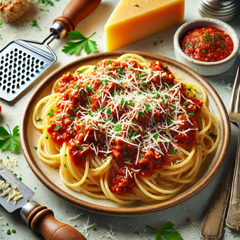
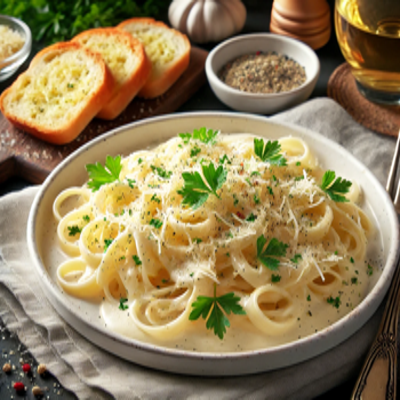

Macarrão à Bolonhesa

O clássico Macarrão à Bolonhesa é uma combinação irresistível de carne moída suculenta e molho de tomate encorpado, temperado com ervas aromáticas. Essa receita simples e saborosa é perfeita para um almoço em família ou um jantar acolhedor, trazendo conforto e satisfação em cada garfada. Uma escolha ideal para quem busca uma refeição tradicional e cheia de sabor.
Ingredientes:
- 500g de macarrão (espaguete, penne ou outra de sua preferência)
- 500g de carne moída
- 1 cebola média picada
- 2 dentes de alho picados
- 2 latas de tomate pelado ou molho de tomate
- 2 colheres de sopa de azeite de oliva
- 1 cenoura ralada (opcional)
- 1 folha de louro
- Sal e pimenta-do-reino a gosto
- 1/2 xícara de vinho tinto (opcional)
- Salsinha e queijo parmesão ralado para decorar
Modo de Preparo:
- Cozinhe o macarrão em água salgada até ficar al dente. Escorra e reserve.
- Em uma panela grande, aqueça o azeite de oliva em fogo médio. Adicione a cebola e refogue até ficar macia.
- Acrescente o alho e refogue por mais 1 minuto.
- Adicione a carne moída, tempere com sal e pimenta, e cozinhe até dourar.
- Se desejar, adicione o vinho tinto e deixe cozinhar até o álcool evaporar.
- Adicione o tomate pelado (ou molho de tomate) e a folha de louro. Se usar cenoura ralada, adicione neste momento.
- Deixe o molho cozinhar em fogo baixo por cerca de 20 minutos, mexendo ocasionalmente, até engrossar.
- Descarte a folha de louro e ajuste os temperos conforme necessário.
- Misture o macarrão cozido ao molho ou sirva o molho por cima.
- Decore com salsinha picada e queijo parmesão ralado antes de servir.
Macarrão ao Molho Alfredo

O Macarrão ao Molho Alfredo é uma receita cremosa e rica, feita com uma combinação simples, mas irresistível, de manteiga, creme de leite e queijo parmesão. Esta delícia italiana é perfeita para uma refeição rápida e sofisticada, capaz de conquistar qualquer paladar com sua textura suave e sabor marcante.
Ingredientes:
- 500g de macarrão (fettuccine é o mais tradicional)
- 2 colheres de sopa de manteiga
- 1 xícara de creme de leite fresco
- 1 e 1/2 xícaras de queijo parmesão ralado
- 2 dentes de alho picados (opcional)
- Sal e pimenta-do-reino a gosto
- Salsinha picada para decorar
Modo de Preparo:
- Cozinhe o macarrão em água salgada até ficar al dente. Escorra e reserve.
- Em uma panela grande, derreta a manteiga em fogo baixo.
- Se estiver usando alho, adicione-o e refogue por 1 minuto até dourar levemente.
- Adicione o creme de leite e aqueça, sem deixar ferver, por cerca de 3 minutos.
- Acrescente o queijo parmesão ralado aos poucos, mexendo sempre, até o molho ficar homogêneo e cremoso.
- Tempere com sal e pimenta-do-reino a gosto.
- Misture o macarrão cozido ao molho, envolvendo bem todos os fios.
- Decore com salsinha picada e sirva imediatamente.